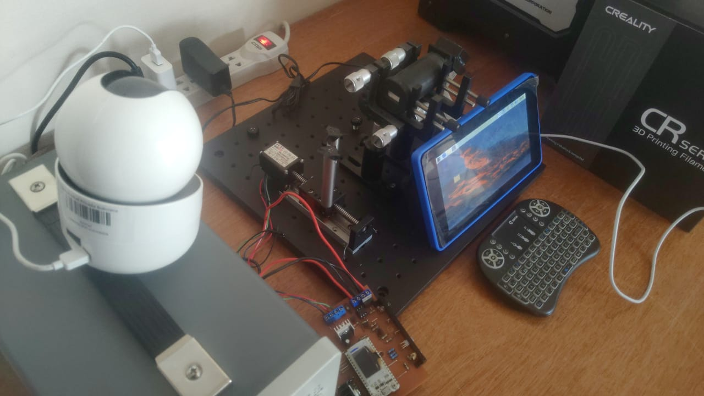

<mat-card class="card mat-elevation-z0" id="experiment-card">
  <p class="title">Experiment view</p>

  
  <!-- Use canvas div to process images obtained from actual camera -->
  
  <!-- <div class="center">
    <canvas #streaming alt="Experiment streaming" id="experiment-img"></canvas>
  </div> -->
</mat-card>
